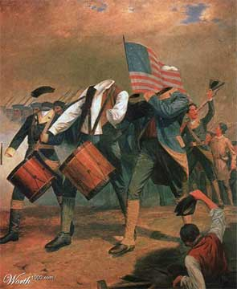

|

Notice of Revocation of Independence
Due to your inability to self-govern, your independence has been revoked.
- - - - - - - - - -
by John Cleese
 o the citizens of the United States of America, In the light of your failure to elect a competent President of the USA and thus to govern yourselves, we hereby give notice of the revocation of your independence, effective today. Her Sovereign Majesty Queen Elizabeth II will resume monarchical duties over all states, commonwealths and other territories. Except Utah, which she does not fancy. o the citizens of the United States of America, In the light of your failure to elect a competent President of the USA and thus to govern yourselves, we hereby give notice of the revocation of your independence, effective today. Her Sovereign Majesty Queen Elizabeth II will resume monarchical duties over all states, commonwealths and other territories. Except Utah, which she does not fancy.
Your new prime minister (The Right Honourable Tony Blair, MP for the 97.85% of you who have until now been unaware that there is a world outside your borders) will appoint a minister for America without the need for further elections.
Congress and the Senate will be disbanded. A questionnaire will be circulated next year to determine whether any of you noticed.
To aid in the transition to a British Crown Dependency, the following rules are introduced with immediate effect:
1. You should look up "revocation" in the Oxford English Dictionary. Then look up aluminium." Check the pronunciation guide. You will be amazed at just how wrongly you have been pronouncing it. The letter 'U' will be reinstated in words such as 'favour' and 'neighbour,' skipping the letter 'U' is nothing more than laziness on your part. Likewise, you will learn to spell 'doughnut' without skipping half the letters. You will end your love affair with the letter 'Z' (pronounced 'zed' not 'zee') and the suffix "ize" will be replaced by the suffix "ise."
You will learn that the suffix 'burgh is pronounced 'burra' e.g. Edinburgh. You are welcome to respell Pittsburgh as 'Pittsberg' if you can't cope with correct pronunciation. Generally, you should raise your vocabulary to acceptable levels. Look up "vocabulary." Using the same twenty-seven words interspersed with filler noises such as "like" and "you know" is an unacceptable and inefficient form of communication. Look up "interspersed." There will be no more 'bleeps' in the Jerry Springer show. If you're not old enough to cope with bad language then you shouldn't have chat shows. When you learn to develop your vocabulary then you won't have to use bad language as often.
2. There is no such thing as "US English." We will let Microsoft know on your behalf. The Microsoft spell-checker will be adjusted to take account of the reinstated letter 'u' and the elimination of "-ize."
3. You should learn to distinguish the English and Australian accents. It really isn't that hard. English accents are not limited to cockney, upper-class twit or Mancunian (Daphne in Frasier). You will also have to learn how to understand regional accents - Scottish dramas such as "Taggart" will no longer be broadcast with subtitles. While we're talking about regions, you must learn that there is no such place as Devonshire in England. The name of the county is "Devon." If you persist in calling it Devonshire, all American States will become "shires" e.g. Texasshire, Floridashire, Louisianashire.
4. Hollywood will be required occasionally to cast English actors as the good guys. Hollywood will be required to cast English actors to play English characters. British sit-coms such as "Men Behaving Badly" or "Red Dwarf" will not be re-cast and watered down for a wishy-washy American audience who can't cope with the humour of occasional political incorrectness.
5. You should relearn your original national anthem, "God Save The Queen," but only after fully carrying out task 1. We would not want you to get confused and give up half way through.
6. You should stop playing American "football." There is only one kind of football. What you refer to as American "football" is not a very good game. The 2.15% of you who are aware that there is a world outside your borders may have noticed that no one else plays "American" football. You will no longer be allowed to play it, and should instead play proper football. Initially, it would be best if you played with the girls. It is a difficult game. Those of you brave enough will, in time, be allowed to play rugby (which is similar to American "football," but does not involve stopping for a rest every twenty seconds or wearing full kevlar body armour like nancies). We are hoping to get together at least a US Rugby sevens side by 2005. You should stop playing baseball. It is not reasonable to host an event called the 'World Series' for a game which is not played outside of America. Since only 2.15% of you are aware that there is a world beyond your borders, your error is understandable. Instead of baseball, you will be allowed to play a girls' game called "rounders" which is baseball without fancy team strip, oversized gloves, collector cards or hotdogs.
7. You will no longer be allowed to own or carry guns. You will no longer be allowed to own or carry anything more dangerous in public than a vegetable peeler. Because we don't believe you are sensible enough to handle potentially dangerous items, you will require a permit if you wish to carry a vegetable peeler in public.
8. July 4th is no longer a public holiday. November 2nd will be a new national holiday, but only in England. It will be called "Indecisive Day."
9. All American cars are hereby banned. They are crap and it is for your own good. When we show you German cars, you will understand what we mean. All road intersections will be replaced with roundabouts. You will start driving on the left with immediate effect. At the same time, you will go metric with immediate effect and without the benefit of conversion tables. Roundabouts and metrication will help you understand the British sense of humour.
10. You will learn to make real chips. Those things you call French fries are not real chips. Fries aren't even French, they are Belgian though 97.85% of you (including the guy who discovered fries while in Europe) are not aware of a country called Belgium. Those things you insist on calling potato chips are properly called "crisps." Real chips are thick cut and fried in animal fat. The traditional accompaniment to chips is beer which should be served warm and flat. Waitresses will be trained to be more aggressive with customers.
11. As a sign of penance 5 grams of sea salt per cup will be added to all tea made within the Commonwealth of Massachusetts, this quantity to be doubled for tea made within the city of Boston itself.
12. The cold tasteless stuff you insist on calling beer is not actually beer at all, it is lager. From November 1st only proper British Bitter will be referred to as "beer," and European brews of known and accepted provenance will be referred to as "Lager." The substances formerly known as "American Beer" will henceforth be referred to as "Near-Frozen Knat's Urine," with the exception of the product of the American Budweiser company whose product will be referred to as "Weak Near-Frozen Knat's Urine." This will allow true Budweiser (as manufactured for the last 1000 years in Pilsen, Czech Republic) to be sold without risk of confusion.
13. From November 10th the UK will harmonise petrol (or "Gasoline" as you will be permitted to keep calling it until April 1st 2005) prices with the former USA. The UK will harmonise its prices to those of the former USA and the Former USA will, in return, adopt UK petrol prices (roughly $6/US gallon - get used to it).
14. You will learn to resolve personal issues without using guns, lawyers or therapists. The fact that you need so many lawyers and therapists shows that you're not adult enough to be independent. Guns should only be handled by adults. If you're not adult enough to sort things out without suing someone or speaking to a therapist then you're not grown up enough to handle a gun.
15. Please tell us who killed JFK. It's been driving us crazy.
16. Tax collectors from Her Majesty's Government will be with you shortly to ensure the acquisition of all revenues due (backdated to 1776).
Thank you for your co-operation and have a great day.

|